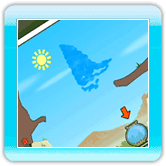
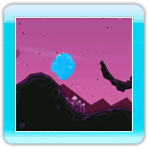
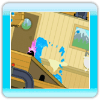
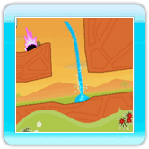

El estado líquido del agua es la primera forma que encontrarás cuando juegues Fluidity. Podrás utilizar las siguientes habilidades cuando estés en estado líquido:
·Saltar

Para lograr que el agua salte en el aire: rápidamente agita el Wii Remote hacia arriba. Entre más rápido agites el Wii Remote hacia arriba, más alto saltará el agua. Esto se puede hacer en cualquier momento aunque no estés en el suelo.
·Acumular

Hay ocasiones en las que querrás asegurarte de que toda el agua esté reunida en una sola parte y aquí es cuando la habilidad de acumular resulta provechosa.
Una vez desbloqueada esta habilidad, simplemente mantén oprimido  para hacer que el agua se junte completamente. Esto es particularmente provechoso cuando saltas, ya que así te asegurarás de que el agua no se derrame por completo por causa del aire.
para hacer que el agua se junte completamente. Esto es particularmente provechoso cuando saltas, ya que así te asegurarás de que el agua no se derrame por completo por causa del aire.
·Explotar

Si continúas acumulando al oprimir , eventualmente el agua explotará y saldrá disparada en todas las direcciones. Aunque quieres evitar las explosiones, estas pueden ser de utilidad para mover bloques y para recoger burbujas de agua que son difíciles de alcanzar.
·Chorro

Una vez que la habilidad chorro ha sido desbloqueada, el oprimir  mientras estés acumulando causará que el agua se dispare en el aire. Para lograr un chorro vertical oprime arriba en . También puedes combinar arriba y derecha o izquierda en para dirigir el chorro. Además, entre más acumules antes de oprimir arriba en más alto llegará el chorro de agua. Esta habilidad puede ser de utilidad si quieres alcanzar áreas en las cuales el salto no es suficiente o si quieres deshacerte de enemigos que vuelan.
mientras estés acumulando causará que el agua se dispare en el aire. Para lograr un chorro vertical oprime arriba en . También puedes combinar arriba y derecha o izquierda en para dirigir el chorro. Además, entre más acumules antes de oprimir arriba en más alto llegará el chorro de agua. Esta habilidad puede ser de utilidad si quieres alcanzar áreas en las cuales el salto no es suficiente o si quieres deshacerte de enemigos que vuelan.